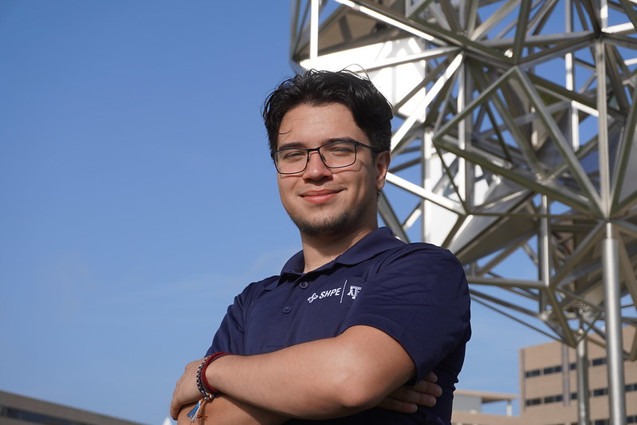
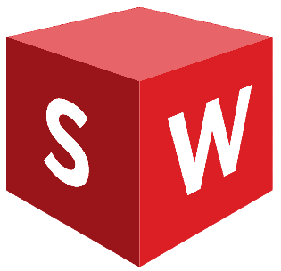
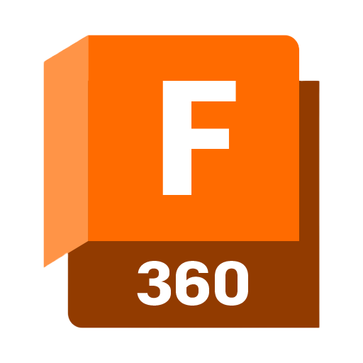
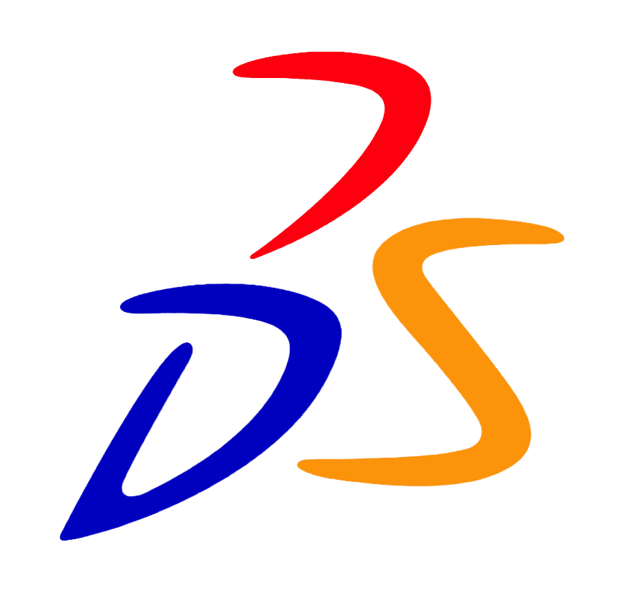
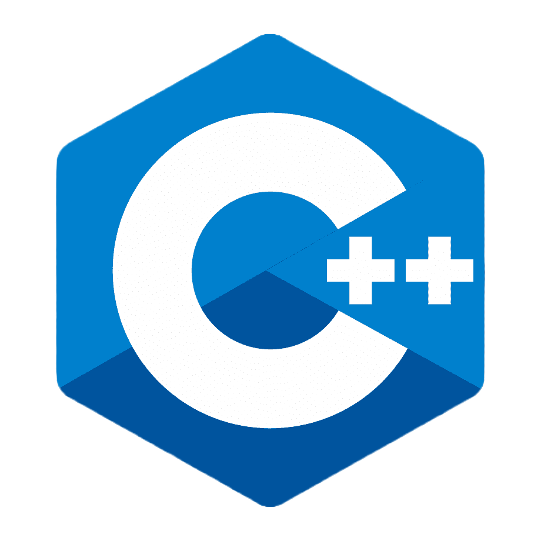
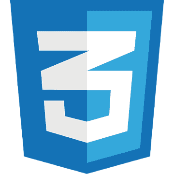
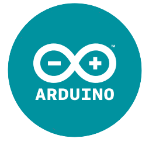
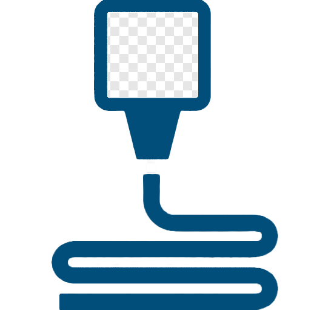

ABOUT ME
I'm a mechanical engineer, designer, and maker. Today I work as a Senior Mechanical Engineer on the Drive Unit team at Lucid Motors, where I lead design, integration, and validation across the Air, Gravity, and Sapphire electric powertrain programs. My work takes hardware from concept and CAD through prototype builds, testing, and production release. I earned my B.S. in Mechanical Engineering from Texas A&M University and my M.Eng. from U.C. Berkeley, and along the way I had the privilege of interning at Boeing, ExxonMobil, and Northrop Grumman.
Outside of my day job, I believe in relentless learning and I love building things end to end. I've made an automated chessboard that moves its own pieces, a 3-axis camera gimbal, and a sign language interpreter, and I'm currently developing Aucosto, a full-stack personal operations platform. I also care deeply about community. I served as President of the Society of Hispanic Professional Engineers, where I grew the chapter past 400 members, and today I serve as Vice President of Lucid's HOLA employee resource group.
SKILLS

SolidWorks
Fusion 360
CATIA V6
C++ HTML
CSS
Arduino
3D PrintingGD&T DFM/DFA FEA Data Analysis Bilingual (English/Spanish)